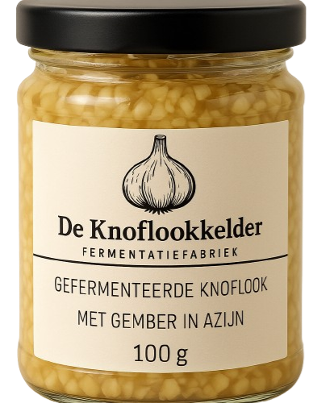

Ons Verhaal
De liefde voor knoflook begon klein, maar groeide uit tot een missie. Elke keer wanneer we samen kookten bij vrienden of familie, ontbrak er iets: een goede basis, een eenvoudige smaakmaker met karakter. Altijd dat gehannes met een teentje knoflook persen of snijden, vaak te scherp of te vlak van smaak. Dat moest anders.
Zo ontstond De Knoflookkelder, een product van FermentatieFabriek. Hier wordt knoflook niet zomaar verwerkt, maar met de hand gepeld, fijngesneden en ambachtelijk gefermenteerd in een zorgvuldig samengestelde mix van natuurazijn, appelazijn en een vleugje suiker. Dit geeft onze knoflook zijn unieke, zachte en lichtzoete smaak—zonder het scherpe randje.
In onze kelder draait alles om rust en smaak. Geen haast, maar aandacht voor detail. Zo krijg jij een potje pure eenvoud, rijk aan karakter. Een vervanger voor het standaard knoflookteentje, maar dan beter.
Ons Product
Onze gefermenteerde knoflook met gember in azijn is direct klaar voor gebruik. Geen gedoe meer met snijden of persen, maar direct de perfecte smaakmaker bij de hand. Ambachtelijk gemaakt in kleine batches, met liefde en vakmanschap.
Waarom De Knoflookkelder?
- Met de hand gepeld en verwerkt
- Ambachtelijke fermentatie in kleine batches
- Zacht, semi-zoet en smaakvol
- Perfect als basis in marinades, sauzen, pasta's en overal waar knoflook in gaat!
Bestellen
Wil je onze gefermenteerde knoflook zelf proberen? Neem contact op of bestel direct via WhatsApp.
Bestel via WhatsApp